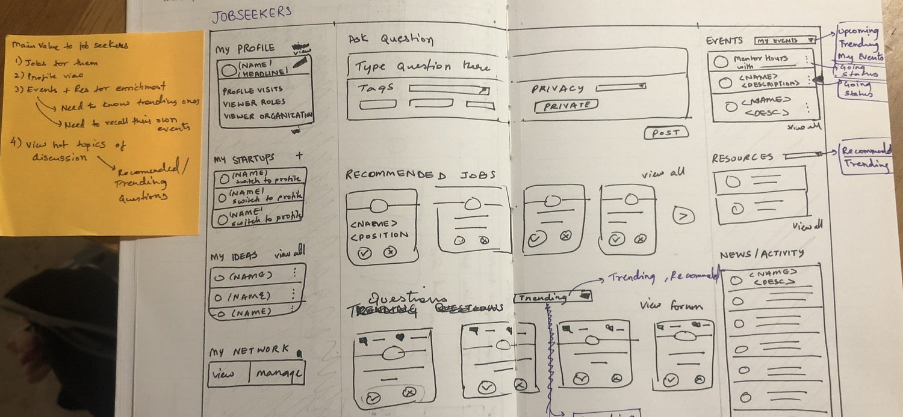

Creating Good Stuff.
I am Rajavi, an impact-driven product designer and web developer.
I solve prickly problems by leveraging the interdependence between design, code and emotions.
Currently, I am majoring in Computer Science + Economics as well as pursuing the design innovation certificate
at University of California - Berkeley. I have been exploring design and technology as an Associate Product Manager
at CatalistX, a bay area startup that helps universities track their innovation ecosystem. I have also worked at a
large-scale tech company Infosys. I worked in their Digital innovation Studio in Providence, RI for a major client
at Infosys. My challenge was to improve the efficiency of sales processes especially the sales proposal cycle in
the client's business ecosystem.
Humanizing Designs For Humans.
Exposed to working in different size companies, I am more responsive to curve balls that are thrown at me in all kinds of shapes and sizes. Furthermore, these experiences have taught me how to manage, collaborate and thrive in a team with diverse skills and backgrounds. Whether it is shipping a new feature or increasing engagement for an existing feature, the open-minded problem-solver within me is always curious to tackle the challenge with my team. I enjoy approaching these challenges by going back to the drawing boards, the ideation stage, that gives me enough room to research, brainstorm, strategize and innovate. My vision is to learn and grow in the field of UX by exposing myself to enigmatic consumer problems and mastering the process of research, analysis, design and development.

Areas of Expertise
Skills
Frontend Development
Backend
Product Strategy
Design Systems
Affinity Diagraming
Persona Analysis
User Interviews
Journey Mapping
Sketching
Wireframing
Visual Design
Prototyping
Animation
Tools & Programming Lanuages
HTML
CSS
Bootstrap
JavaScript | React
Java
Python
SQL
Adobe Illustrator
Adobe Experience Design
Adobe After Effects
Figma
Marvel
Microsoft Office Suite